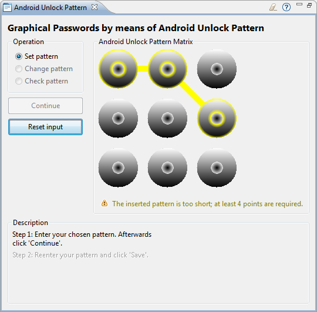
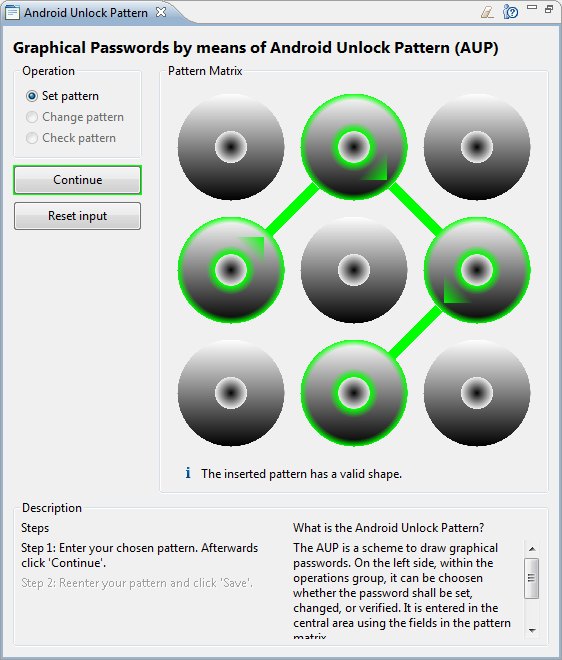
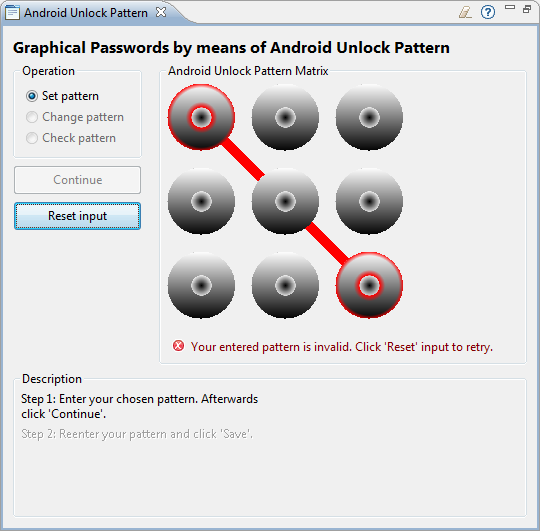
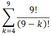

Das hier implementierte grafische Passwortverfahren ist dem Android Unlock-Pattern nachempfunden, mit dem man sich an Android-Smartphones anmelden kann. Dieses Verfahren im Folgenden genauer vorgestellt und die Sicherheit im Vergleich zur PIN-Eingabe analysiert. Anschließend werden einige weitere Methoden zur Erzeugung grafischer Passwörter vorgestellt.
Dieses Verfahren zur Erzeugung grafischer Passwörter wird bei dem Mobiltelefon-Betriebssystem Android seit Oktober 2008 in der Version 1.0[1] als Entsperrsystem eingesetzt. Ziel dieser Methode ist es, Unbefugten den Zugriff auf Daten des Telefons zu verweigern. Seit Android 2.2 ist diese Methode der Entsperrung nicht mehr die einzig verfügbare Methode: Es besteht nun auch die Möglichkeit, einen alpha-numerischen PIN anstatt des Android Unlock-Patterns zu verwenden.
Im Folgenden, gibt es einen kurzen Einblick in die Vorschriften zur Passworterstellung und die Sicherheit des AUP.
Das Grundgerüst des AUP besteht neun Feldern, die in einer 3 mal 3 Matrix angeordnet sind. Die Passworteingabe erfolgt über das Verbinden der einzelnen Felder. Das dadurch entstandene Muster wird zum Entsperren verwendet.
Für die Konfiguration dieses Passwortes gibt es mehrere Einschränkungen:



Da auf vielen Smartphones ein vom Hersteller modifiziertes Android läuft, wird hier das Google Nexus S mit nicht-modifiziertem Android 2.3.4 als Referenzplattform verwendet. Nach fünfmaliger Falscheingabe des grafischen Passwortes muss der Benutzer 30 Sekunden warten. Nach fünf (weiteren????????) Fehlversuchen gibt es die Möglichkeit, das Smartphone mithilfe des zugehörigen Google-Passwortes zu entsperren. Zusätzlich kann der Benutzer noch weitere 15-mal versuchen, das Muster einzugeben. Nach jeweils fünf Fehlversuchen, muss 30 Sekunden gewartet werden. Nach Insgesamt 20 Fehlversuchen, wird nur noch das Google-Passwort zum Entsperren akzeptiert. Dies wird hier nicht näher betrachtet, da es sich dabei um ein textuelles-Passwort handelt.
Durch die Einschränkungen, die unter Passworterstellung genannt wurden, ergeben sich 389.112 mögliche Muster. Dieser Wert wurde durch ein Brute-Force Programm ermittelt.
Zum Vergleich: Bei einer vier bis 9 stelligen PIN, die aus Ziffern von 1 bis 9 gebildet werden kann und bei der jede Ziffer nur einmal vorkommen darf, gibt es 985.824 verschieden Möglichkeiten. Dies lässt sich durch folgende Formel berechnen:

Dadurch, dass es beim AUP mehr Einschränkungen bezüglich der „Passwort“-Erstellung gibt, ist es gegen einen Brute-force-Angriff anfälliger als das oben als Vergleich angeführte PIN-System. In der Praxis ist ein Brute-force-Angriff über die reguläre Eingabe nicht möglich, da nach 20 Versuchen das Email-Passwort benötigt wird.
Shoulder Surfing
Als shoulder-surfing werden Angriffe bezeichnet, bei denen ein Angreifer einer Person, die ein Passwort kennt, zuschaut, wie diese Person das Passwort eingibt. Der Angreifer versucht dabei, das Passwort zu erkennen und es sich zu merken.
smudge attacks
xxx
Angriff auf die gespeicherten Daten
Wenn unsicher abgespeichert, kann man die Datei lesen und offline untersuchen. Dann geht auch ein Brute-force-Angriff. Wenn die Patterns nur gehasht sind (kein Salt, keine Wiederholung), xxxxxxxx
Prinzip:
Das AUP eine Unterart von DAS.
Rahmenbedingungen:
DAS wird in der Regel, ebenso wie das AUP, auf Geräten mit einem Touchscreen eingesetzt. Bei DAS gibt es eine Matrix, auf der der Benutzer eine einfache 2D-Grafik zeichnet. Gespeichert wird, welche Felder der Benutzer berührt und in welcher Reihenfolge. Um sich zu authentisieren, muss der Benutzer die korrekten Felder in der richtigen Reihenfolge eingeben.
Der Erfinder der DAS schlägt eine Matrixgröße von fünf mal fünf vor.[2]
Mögliche Angriffe:
Mögliche Abwehrmöglichkeiten:
Windows 8 wird vermutlich auch ein grafisches Passwort als Login-Möglichkeit haben.[4]
Passface ???????????
Fußnoten